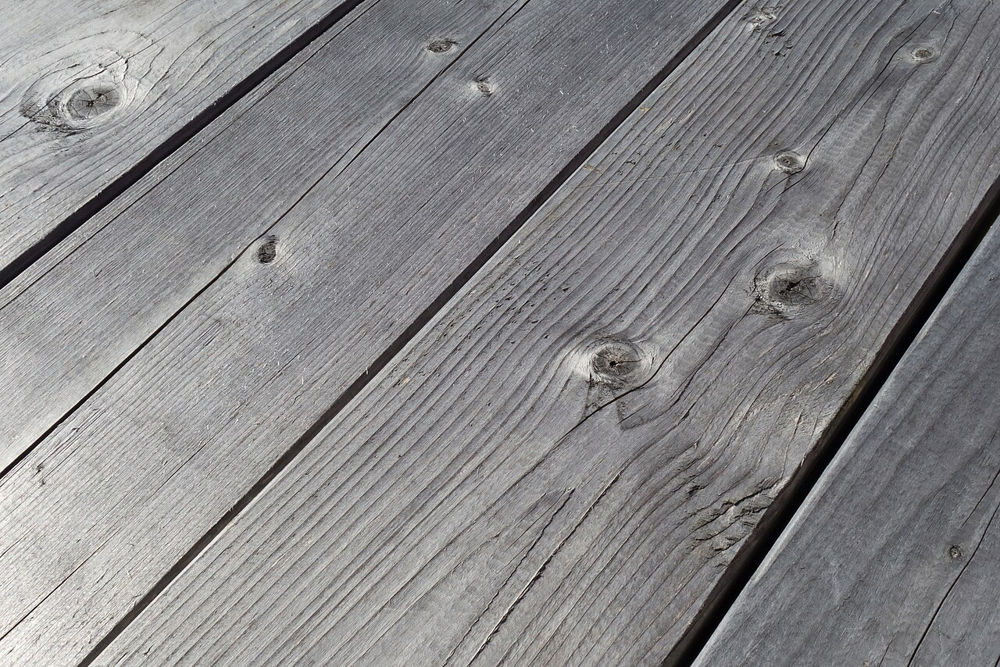

メニュー
メニューの詳細は準備中です。お問い合わせください。
準備中
準備中
お出しできる内容や価格は、現在ご案内の準備をしています。最新の情報は、お電話またはInstagramでご確認ください。


制作側の案によるサンプルです。メニューの内容は店舗の公式情報ではなく、現在は準備中です。
メニューの詳細は準備中です。お問い合わせください。
準備中
お出しできる内容や価格は、現在ご案内の準備をしています。最新の情報は、お電話またはInstagramでご確認ください。

掲載写真はフリー素材のイメージであり、店舗の実際の様子ではありません。他地域で撮影されたものや撮影地が不明なものを含みます。